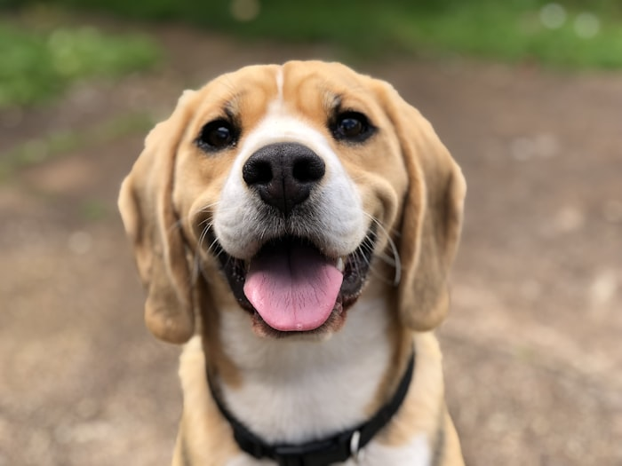
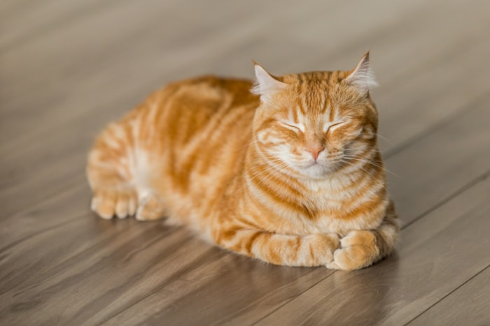
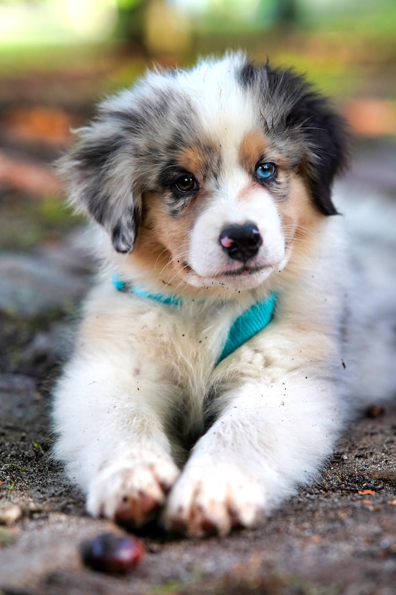

Dog
Dog
Bella
Bella is energetic, friendly, and very food motivated. She would be great with an active family who can walk her daily and keep training fun.
Enquire about BellaEach pet below has a small personality note so visitors can get a better idea before making an enquiry.
Dog
Bella is energetic, friendly, and very food motivated. She would be great with an active family who can walk her daily and keep training fun.
Enquire about Bella Cat
Cat
Oliver is calm, observant, and likes a quiet window spot. He is friendly once he trusts you and is fine with other relaxed cats.
Enquire about Oliver Dog
Dog
Max is young and still learning. He loves sniffing everything and needs someone who is patient with basic training.
Enquire about Max
DogLuna is clever and active. She needs secure fencing, exercise, and a person who understands that huskies can be a bit dramatic sometimes.
Enquire about Luna
CatCleo wants a peaceful home and gentle handling. She has a big coat, a bigger opinion, and a soft side that comes out slowly.
Enquire about Cleo
DogBuddy has been with us the longest. He is gentle, a bit overlooked, and would make a lovely companion for a steady household.
Enquire about Buddy
Dog
Bella is energetic, friendly, and very food motivated. She would be great with an active family who can walk her daily and keep training fun.
Enquire about Bella
Dog
Max is young and still learning. He loves sniffing everything and needs someone who is patient with basic training.
Enquire about MaxLuna is clever and active. She needs secure fencing, exercise, and a person who understands that huskies can be a bit dramatic sometimes.
Enquire about LunaBuddy has been with us the longest. He is gentle, a bit overlooked, and would make a lovely companion for a steady household.
Enquire about Buddy
Cat
Oliver is calm, observant, and likes a quiet window spot. He is friendly once he trusts you and is fine with other relaxed cats.
Enquire about OliverCleo wants a peaceful home and gentle handling. She has a big coat, a bigger opinion, and a soft side that comes out slowly.
Enquire about Cleo